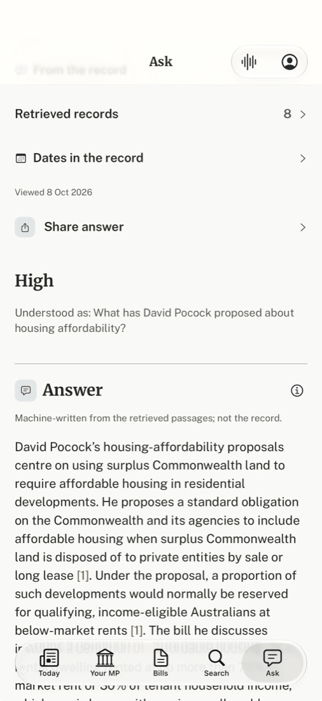

The question is the heading and the answer follows it. Everything about the answer (its sources, dates, sharing) comes after the answer or behind ⋯, never in four rows above the question.
Before · iPhone, build 21 (Jake's TestFlight capture, real data)

1 1 2 1 3 4 5After · iPhone wireframe
David Pocock's housing-affordability proposals centre on using surplus Commonwealth land to require affordable housing in residential developments.
He proposes a standard obligation on the Commonwealth and its agencies to include affordable housing when surplus Commonwealth land is disposed of to private entities by sale or long lease [1]. Under the proposal, a proportion of such developments would normally be reserved for qualifying, income-eligible Australians at below-market rents [1].
Serif speaks for the record; sans speaks for OPAX. The answer is machine text, so it is set in Public Sans; a quoted passage from the record (in Sources and in the reader) is Merriweather.